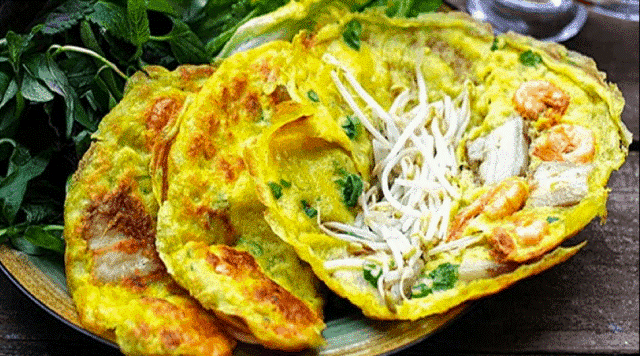

Bánh xèo là một món ăn miền Trung vô cùng thân quen với người dân Việt. Thế nhưng, để thưởng thức bánh xèo miền Trung đặc trưng đúng vị thì phải tìm đến bánh xèo Quảng Hoà ở Quảng Bình. Điều đặc biệt làm nên đặc sản bánh xèo Quảng Hoà là bởi món “cá chuối” độc đáo làm từ chuối sứ được thái nhỏ, luộc chín rồi uốn thành hình con cá trông lạ mắt. Cùng với những nguyên liệu dân giã như gạo đỏ, tôm, cá chuối và được thưởng thức bằng cách cuộn cùng với các loại rau sống, bánh đa, chấm cùng nước mắm, bánh xèo Quảng Hoà có mùi thơm thoang thoảng của gạo lứt và có vị giòn tan nóng hổi càng ăn càng thèm.
Cháo canh cá lóc là một trong những món đặc sản Quảng Bình được nhiều người yêu thích tại đây. Được làm từ sợi bánh canh to ăn “đẫy miệng”, kết hợp cùng nước dùng nóng hổi ngon từ thịt, ngọt từ xương, và đặc biệt là những miếng cá lóc chiên sơ giòn giòn, cháo canh cá lóc sẽ là món ăn mà đã ăn một lần là sẽ nhớ mãi muôn đời.
Lẩu cá khoai được chế biến từ loài cá khoai có xương mềm, thịt nhão. Để làm nên món ăn đặc trưng này, cá khoai phải tươi và dày thịt để không bị nát, nước lẩu cũng phải có đầy đủ các nguyên liệu như nước cốt me, khế chua, măng chua, cà chua,… mới tạo nên hương vị ngọt chua đặc trưng. Đến Quảng Bình vào mùa đông thì đừng quên quây quần bên nồi nước lẩu nóng hổi và thưởng thức món lẩu cá khoai vô cùng thơm ngon nhé!
Với giá chỉ từ 25-50k/bát, các món ăn đặc sản nổi tiếng của Quảng Bình như cháo lươn, súp lươn, miến lươn, và cháo hàu tuy nghe có phần giản dị, mộc mạc nhưng lại mang hương vị thơm ngon đến không ngờ. Những con hàu thì to béo, ngon ngọt, lươn đồng thì luôn được sơ chế sạch sẽ loại bỏ mùi tanh, tạo ra hương vị ngọt mềm, thấm đẫm gia vị đã tạo ra nhưng món ăn ngon làm say mê nhiều thực khách. Hãy tìm đến quán chị Ngạnh tại 18 Hoàng Diệu, thành phố Đồng Hới để thưởng thức những món đặc sản lươn đồng và hàu nổi tiếng của Quảng Bình nhé.
Đặc sản Quảng Bình nổi tiếng với sự độc và lạ và trong đó phải kể đến món đẻn biển. Đẻn biển là một loại rắn biển thân thon nhỏ, mình vằn da nhám, đầu nhỏ đuôi dẹt và mang giá trị dinh dưỡng cao. Từ đẻn biển, người Quảng Bình có thể chế biến ra nhiều món ngon hấp dẫn như: Ram đẻn, cháo đẻn, chả đẻn, tiết đẻn, đẻn bằm xúc bánh đa, đẻn hầm sả ớt, đẻn nướng cuốn lá lốt, đẻn hầm thuốc bắc và rượu tiết đẻn. Ram đẻn có lẽ là món ăn phổ biển hơn cả với lớp vỏ giòn rụm và nhân đẻn thơm ngậy, càng ăn càng “ghiền”.
Sò huyết sông Roòn là một đặc sản không thể bỏ qua ở Quảng Bình. Sò huyết ở vùng sông này có thể được chế biến thành rất nhiều món ăn, nhưng đặc sắc nhất có lẽ là sò huyết tái chanh và sò huyết chần nước mắm. Với cách chế biến độc đáo cùng với nguyên liệu tươi ngon bổ dưỡng, món ăn này chắc chắn sẽ là đặc sản không thể bỏ qua khi du lịch Quảng Bình.
Đã đến với vùng biển Quảng Bình thì không thể nào quên thưởng thực món mực thơm ngon. Mực được nướng trên lửa than hồng, xé nhỏ thành nhiều sợi, thưởng thức cùng với tương ớt thì thấy rõ được vị ngon ngọt của mực hoà quyện cùng vị ớt cay nồng, vừa ăn vừa “nhấm nháp” cùng chút bia là ngon hết sảy không thể quên.
Là một đặc sản nức tiếng ở vùng đất Quảng Bình, cá nghéo (hay còn gọi là cá nhám) có ít mỡ, nhiều nạc, da nhám và được làm nguyên liệu cho rất nhiều món ăn ngon. Nếu như gỏi cá nghéo dùng với nước lèo, rau sống ngon thanh mát, cá nghéo kho với nghệ, gừng lại đậm đà, thì cháo cá nghéo lại dân giã với mùi hành phảng phất, nóng hổi mà bổ dưỡng, có thể ăn để giải cảm, giải sốt.
Là loại nấm mọc ven dọc bên bờ của những con suối và có tai nấm tròn, màu tím đậm, nấm tràm là nguyên liệu cho một số các món ăn quen thuộc của người dân Quảng Bình như: Cháo nấm tràm, nấm tràm xào mực,… nhưng có lẽ món ăn xuất hiện nhiều nhất trong các bữa ăn của người Quảng Bình là món canh nấm tràm. Canh có thể được nấu cùng rau lang, rau muống, lá lốt cùng chút ruốc, tỏi phi mang đến hương vị đậm đà ngon lạ miệng, đậm chất đặc sản Quảng Bình quê hương không thể lẫn.
Nhắc đến đặc sản Quảng Bình thì không thể bỏ qua món khoai deo. Khoai deo (hay còn gọi là sâm đất) là một món ăn vô cùng bổ dưỡng và được chế biến từ khoai lang đỏ trồng trên đất thịt. Người Quảng Bình cẩn thận chế biến khoai deo từ công đoạn chọn khoai, đem khoai đi luộc chín rồi cắt lát và phơi trên cát trong khoảng 9-12 ngày nắng. Khi thưởng thức bạn sẽ cảm nhận được vị khoai ngọt bùi nguyên chất và thấm đậm hương vị của gió và cát trắng.
Người dân Quảng Bình đã “thổi hồn” vào bánh bột lọc Huế và tạo ra một đặc sản riêng cho vùng đất đầy nắng và gió này. Bánh bột lọc được làm từ bột sắn lọc, tôm sông, mộc nhĩ cùng chút gia vị đơn giản. Sau khi bọc bột bánh với tôm, vắt thành hình tai bèo nhỏ xinh, bánh được nhúng nước sôi để ăn liền, hoặc được gói lá chuối và đồ lên như đồ xôi cho những người mang đi xa. Ở Quảng Bình thì chỉ cần vài chục nghìn thôi là bạn có thể thoả thích ăn no nê một “chầu” bánh lọc bột thơm dẻo!
Bánh khoái là loại đặc sản Quảng Bình có nguyên liệu khá giống bánh xèo nhưng cách chế biến, hình dạng và hương vị thì lại có điểm khác biệt. Bột để làm bánh được chọn từ loại gạo ngon, sau khi xay nhuyễn sẽ hoà với nước, đánh với lòng đỏ trứng gà, tạo ra một hỗn hợp lỏng. Nhân bánh bao gồm thịt nạc heo băm nhỏ, tôm, giá. Khi thưởng thức bạn sẽ cảm thấy được vị thơm ngon của nhân tôm, thịt, phảng phất hương gạo thơm của vỏ bánh giòn tan, chấm với nước mắm đậu lạc, gan heo bùi ngậy.